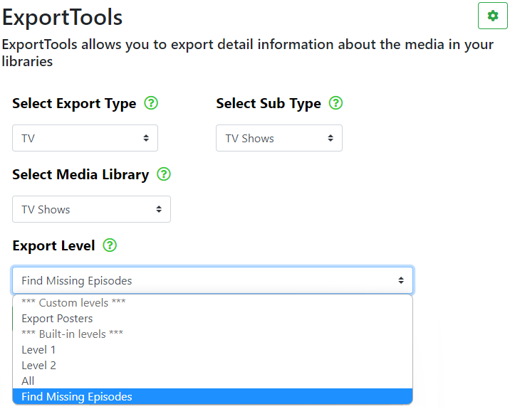

Note: From v1.1.0 onwards, you are now able to find missing TV Show episodes using ExportTools.
There are some prerequisites though:
- Your TV Show library must have been created with or converted to use the new Plex TV Series agents.
- If your TV Show library was converted to the new Plex TV Series agents, then you MUST run Refresh Metadata for the entire TV Show library.
Before entering ExportTools, make sure you have selected a server to work with. Most operations will fail if you have not selected a server.

In order to use the Find Missing Episodes function, you need to make the selections in ExportTools as shown below:
Note: your TV Show Media Library may be named differently


After making the above selections, click on the Export Media button. The status of the export will be displayed in the Status: box shown above.
A .csv and/or .xlsx file will be output to the export folder you specified in Global Settings > Export Settings.
The .csv and/or .xlsx file/s will contain a list of the TV Shows in your library along with various information held by your Plex Media Server and information held at the TMDB and/or TVDB for each of the series you have in your library.
Here is a sample of the output file:

Click or tap on the image for a better view of the image.
You may use this information to help correct any misnamed/disordered episodes in your PMS TV Show library and/or to Find Missing Episodes in your TV Show library.
Under the Missing column, you may notice:
- OK. This means that your episode count matches the online databases, so you probably do not have any missing episodes.
- Episode mismatch. This will usually indicate missing episodes.
Check the TVDB and/or TMDB listings for the show, to determine which episodes are missing from your library.
- Guid problem found, please refresh metadata, or sort order not avail at cloud provider.
This may indicate that Refresh Metadata is required for the TV Show.
It may also indicate that you may need to Edit TV Show > Advanced > Episode Ordering and change it from Library default to any of
the other options, The Movie Database (Aired), The TVDB (Aired), etc...

Some of you may have been wondering what the numbers mean in the column shown above.
The first number in single quotes ' ', after the curly bracket { indicates the number of the season and the following number after the colon : indicates the number of episodes in that season. E.G. {'1':40, This shows Season 1 with 40 episodes. The comma , separates each season and episode count.
In the example shown above, there are 4 seasons, each season containing 40 episodes.
WebTools-NG is an independent project and is NOT associated with Plex Inc.
Use of this program is at your own risk, no responsibility is taken by WebTools-NG.
Please consider supporting this project 
- All Rights Reserved - WebTools-NG